Fire Star 12/27/03 now paddling out of Brisbane Australia.
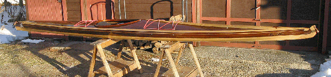
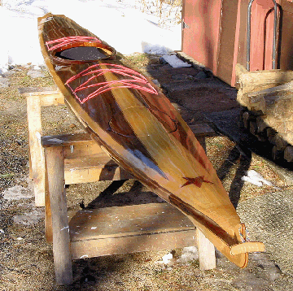 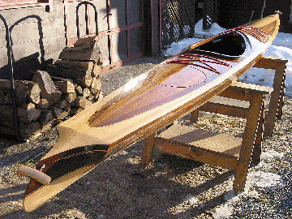
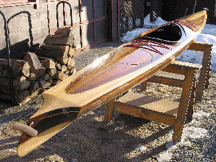
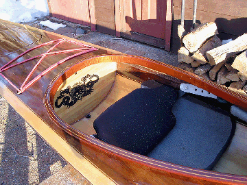

Rear bulkhead behind seat with spirit image .. ....North Shore Inc.. Anatomic highly adjustable Backrest.... Cockpit showing backrest adjustment straps and thigh pads and adjustable foot braces inside.
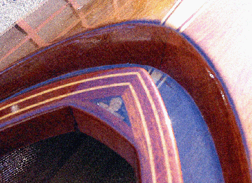 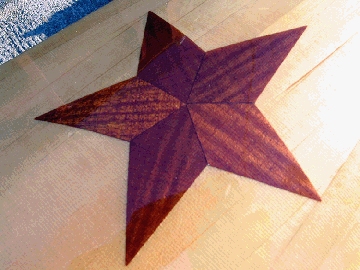
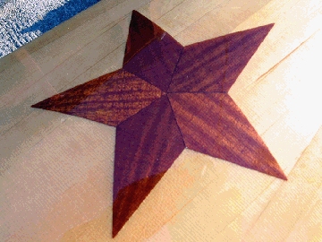
Lincoln penny is embedded in epoxy resin at point of cockpit coaming.... Star veneer detail
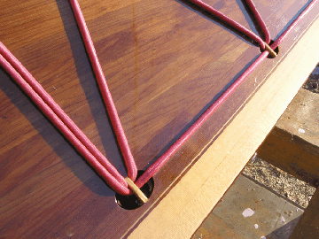 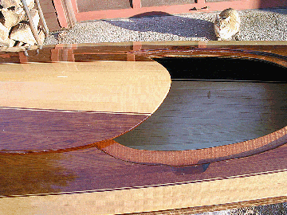
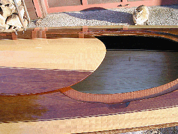
Recessed deck fittings for shock cord hold downs.... Magnetic hatch, deck lip detail
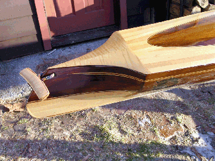 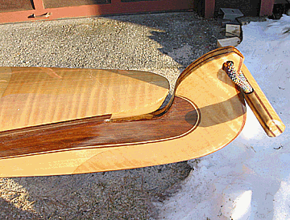
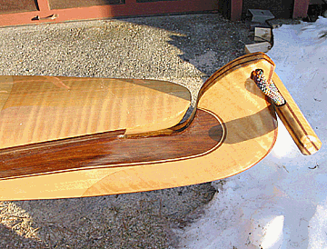
The distinctive baidarka stern left,.. and bifurcated bow at right.